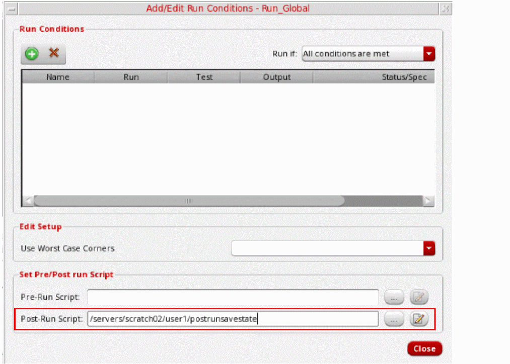
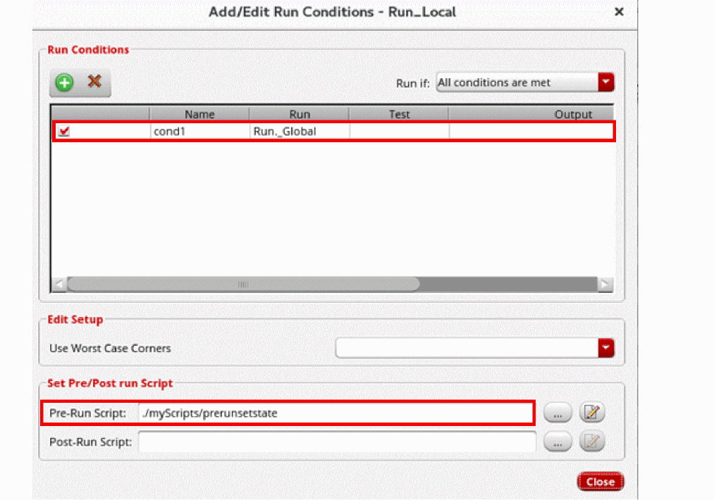

21
Working with Run Plan
Run Plan in ADE Assembler provides the capability to create multiple variations of the setup within a single session, where each run has its own setup details that override the settings in the active setup. Simulations can be run for all the runs in a session together with a single click and their results are generated simultaneously. The different runs can differ in various ways. For example, they can vary in terms of the tests, analyses, or simulation options, or they can run different run modes.
ADE Assembler provides the Run Plan assistant that you can use to create and execute a run plan.
This chapter describes the following:
- The Run Plan Assistant
- Creating a New Run
- Modifying a Run in the Run Plan
- Enabling or Disabling Runs in a Run Plan
- Rules to Use Local or Global Variables for Run Plan Simulations
- Setting Up a Run Plan with the Worst Case Corners Run Mode
- Executing the Run Plan
- Viewing Results of Run Plan Simulations
- Rerun Simulations for Erroneous or Unfinished Points in a Run Plan
- Using Results of One Run in Another
- Virtuosity: What’s New in Run Plan - Part I
- Virtuosity: What’s new in Run Plan - Part II
- Virtuosity: What’s new in Run Plan - PartIII
The Run Plan Assistant
The Run Plan assistant is used to create and manage run plans.
To open the Run Plan assistant, do one of the following:
The Run Plan assistant is displayed to the right of the Outputs pane in the ADE Assembler environment.
The following figure describes the important commands provided in the Run Plan assistant.
Creating a New Run
You can create a run in any of the following ways:
- By using the active setup as base and modifying it as per requirements
- By creating a new setup
-
By copying another runIf you want to reuse a run plan saved in a setup state of the current maestro cellview, or in another cellview, you can use the Load Setup State or Import Setup forms to update the current run plan. Depending on the retain, merge, or overwrite operation selected on that form, the current run plan is updated.
Creating a Run by Using the Active Setup
To create a run by using the active setup as base, do the following:
- Click Create New Run using Active Setup ( ) on the toolbar of the Run Plan assistant.
-
A new run is added to the Run Plan assistant with the default name
Run.n, where n is the incremental count of the number of run plans.
You can change the name of the run, but ensure that it does not contain any special character. -
Expand the tree for the newly added run to view its details.
Note the following points with respect to the new run:
- The run mode and its simulation options are copied from the active setup to the new run. The name of the run mode is visible in the run tree.
-
If the run mode in the active setup is not supported in the run plan, it is changed to the default run mode,
Single Run, Sweeps, and Corners. - The parasitic setup in the maestro view is ignored by the run plan.
- All the tests for which this run will be executed are listed under Tests.
- The details of global variables, parameters, and corners are copied from the active setup to the new run. These are kept synchronized with the corresponding elements in the active setup. For example, if any corner or variable is renamed, modified, or deleted, the change is reflected in the run plan too. However, any new variable or corner is not added automatically. You need to drag and drop that on a run.
- Parametric sets for global variables are also copied from the active setup to the new run.
- If you rename a test in the active setup, the name of the test is updated in the runs where it is referenced. If you delete a test, it is deleted from all the runs where it is referenced.
-
By default, the enabled or disabled status of the check boxes next to the run plan elements is same as that of the active setup. You can change their status as per the requirements of the run plan. For example, you can disable any corner or test not required for the given run, or you can disable a global variable to use the local value of a design variable. To enable a setting, ensure that the check box next to it is selected.To enable or disable multiple corners, select the corners, right-click and choose the Enable or Disable command from the context-sensitive menu.If any test, global variable, or parameter is not applicable for the run, you can delete it. For this, right-click the element to be deleted and click Delete. Either you can delete selected elements from a category or delete the entire category to remove all the elements. For example, you can delete
Global Variablesto delete all the global variables in the run. In this case, the global variables defined in the active setup will be used in the simulation for this run.
If you delete a selected global variable, all the remaining global variables in the run will be used in the simulation. The variables from the active Assembler setup will not be used.
- You cannot add a new corner to a run. However, when you are running a simulation to identify and create worst case corners, new corners are created in the setup of that run. Such worst case corners can be used in other dependent runs. For more details, refer to Using Worst Case Corners Created by Another Run.
To know how you can edit a run, refer to Modifying a Run in the Run Plan.
Creating a Run with a New Setup
To create a run with a new setup, do the following:
-
Click Create New Run (
) on the toolbar of the Run Plan assistant.
A new run is added to the Run Plan assistant with the default nameRun.n, where n is the incremental count of the number of run plans.
- If required, change the run mode. For this, right-click Single Run, Sweeps and Corners and select Change Run Mode – <name of run mode>.
-
Right-click the name of the run mode and choose Simulation options.
The simulation run options form corresponding to that run mode is displayed. Make the required changes in the simulation settings.
A new run is added to the Run Plan assistant with the default nameRun.n, where n is the incremental count of the number of run plans.
You can change the name of the run, but ensure that it does not contain any special character. -
Add the elements that you need to override in the run. For example, if you want to override the tests defined in the active setup, select and drag the required tests from the Data View assistant and drop those on the name of the run, as shown below.
TheTestscategory is added to the run setup and the tests are listed under that. - Similarly, you can add more elements to the run.
- If required, edit the details of elements. For example, you can override the values of the global variables. For this, drag and drop those to the run and modify their values.
To know how you can edit a run, refer to Modifying a Run in the Run Plan.
Creating a Run by Copying Another Run
If you need to create two similar runs, you can set up one run and create its copy. After that, modify one copy to update the existing one or add more settings.
To create a run by copying another existing run, do the following:
-
Right-click a run in the Run Plan assistant and choose Create Run Copy.
A copy of the selected run is created and added to the tree of runs in the Run Plan assistant.
Observe the following:-
The name of the newly created run is
<name-of-the-source-run>:<sequence-of-copy>. You can change the name of the run, but ensure that it does not contain any special character. -
When the copy is created, all the elements, including the pre- or post-run scripts and edit conditions, of the source and the copied runs are the same. You can now modify the two runs independently.For details about how you can edit a run, refer to Creating a Run by Using the Active Setup.
-
The name of the newly created run is
Setting Up a Run Plan with the Worst Case Corners Run Mode
To set up a run with the Worst Case Corners run mode, do this in the Run Plan assistant:
-
Create a run with the run mode set as
Worst Case Corners.
You can create a run by copying from the active setup or by adding specific elements in a blank setup. - Edit the simulation options for worst case corners. For this, right-click the run name and choose Edit Simulator Options from the context-sensitive menu. For details, refer to Worst Case Corners.
-
If you want to run the worst case corners simulation on the existing corners in the setup, import the global variables, parameters, and model file details from the corners setup.
To do this, click Import from Corners Setup in the Worst Case Corners form and choose an appropriate option to import the corner details from all corners or only enabled corners.
The following points describe how the corner details are imported depending on the corner setup in the run:- If the setup of a run contains global variables, when you import corners, the values of variables are taken from the run setup. Only for the global variables that are taken from the active setup because they are not in the run setup, the values are also taken from the active setup.
- If the run does not contain corners, but the active setup contains enabled corners, simulation for the worst case corners run uses the corners from the active setup. That means, when you click Import from Corners Setup on the simulator options form, the corners are imported from the active setup.
-
If the run setup contains corners, it uses the local run setup and ignores the corners in the active setup. In this case, when you click Import from Corners Setup on the simulator options form, the corners are imported from the run setup, as shown below.

A run plan with the Worst Case Corners run mode adds the newly identified worst case corners to the run plan setup as well as the active setup in ADE Assembler. By default, the corners in the active setup are marked as disabled. To change the default status of these corners to enabled, set the enableWCCfromRunPlanInActiveSetup environment variable to t.
Modifying a Run in the Run Plan
After creating a new run, you can modify its elements as per your requirements. The following topics explain how to modify a run:
- Changing the Run Mode
- Modifying the Simulation Options
- Modifying the Values of Global Variables and Parameters
- Modifying Corners
- Modifying the Reliability Setup
- Copying Settings from One Run to Another in a Run Plan
- Changing the Display Order of Runs in a Run Plan
Changing the Run Mode
Right-click the run mode and select Choose Run Mode – <name of another run mode>. If required, you can select multiple runs and edit their run mode together.
Modifying the Simulation Options
You can modify the simulation options for a run in two ways:
Editing the Simulation Options
To modify the simulation options for the selected run mode for a run, right-click the run mode and choose Simulation options.
The run options form for the selected run mode is displayed. Make the required changes and click OK.
Copying Simulation Options from Another Run
You can copy the simulation options from a run to other runs with the same run mode. To copy the options, right-click the run mode and choose Apply Simulation options, and then either choose All to copy options to all other runs that use the same run mode, or a specific run.
Modifying the Values of Global Variables and Parameters
The values of the global variables and parameters are copied from the active setup. After copying these elements to the run plan, you can change these values in two ways:
-
By editing the values in the run plan: To change a value, double-click it. The value is shown in a text box where you can modify it. The updated value is saved when you click anywhere out of the text box. For visual indication, the edited values are displayed in bold text format.
When setting up global variables for a run, you can create parametric sets independent of those in the active setup. To create parametric sets, select two or more global variables, right-click and choose Group as Parametric Set.
If parametric sets for global variables were copied from the active setup, you can modify or remove those parametric sets by using the following commands in the context-sensitive menu:- Add to Parametric Set: Adds a variable to the selected parametric set.
- Ungroup Parametric Set: Deletes the parametric set. After this, the global variables it contained are not a part of any parametric set.
- Remove from Parametric Set: Removes a variable from the parametric set without deleting the set.
-
By copying edited values from the Data View assistant to the run plan: By default, this feature is disabled. To enable copying of edited values of global variables, design variables, parameters, or corners from the Data View assistant to one or all runs in the run plan, set the
copytoRunPlanFromActiveSetupenvironment variable tot. This command enables the Copy to Run Plan command in the shortcut menu of the selected element to copy the selected objects from the active setup to one or all runs in the run plan.
Related Topics
Rules to Use Local or Global Variables for Run Plan Simulations
Modifying Corners
All corners in a run are referenced from the source corners in the active setup, and therefore, are synchronized to reflect any change in the active setup. By default, you cannot modify these corners. However, you can disable the synchronization for any corner so that its value is not changed to reflect any change in its reference in the active setup. This also allows you to modify its values.
To disable synchronization for a corner:
-
Right-click the corner in the run setup and choose Change to Local Corner.
The corners local to a run appear in blue.
In the example shown above, corner C0 is now a local corner for Run.0. If you change the value of C0 in the Data View assistant, values of C0 for Run.0 will not change.
You can edit the definition of a local corner by modifying its variables, parameters, or model files.
To edit a corner definition for a run:
-
Expand the corner to view its details.
The variables, parameters, or model file values for that corner are displayed. These values are editable for local corners. -
Double-click the value field, and add or modify values.
-
Press
Enter.
The modified values are saved in the run plan. These changes are not reflected in the corners setup in the Data View assistant.
At any point, you can use the Change to Referenced Corner command in the context-sensitive menu of a corner in run plan to revert its status of local corner. When you use this command, the local values of the corner are lost and the values from the active setup are copied to it. However, a local corner is not converted to a referenced corner if the active setup does not contain any corner with that name.
copytoRunPlanFromActiveSetup environment variable to t to enable the Copy to Run Plan command in the shortcut menu of the selected corner and choose the corner to which you want to copy the corner details.Modifying the Reliability Setup
If you create a run by copying the active setup, the reliability setup is copied to the run too. You can edit the setup and make any changes, create its copy, or delete it as required.
If your run does not have a reliability setup, you can run reliability analysis in two ways:
- By selectively dragging one or more reliability analyses to the run for which you want to run reliability analysis. When a reliability analysis is copied from the active setup to a run, you can use the context-sensitive menu to edit it, create its copy, or to delete it.
-
By using the reliability analysis from the active setup. If the reliability analysis is enabled in the Data View assistant, but the run plan does not have reliability setup, ADE Assembler prompts you to confirm whether to include the reliability setup from the Data View assistant. By clicking Yes in the confirmation box, you can run reliability analysis with run plan. The only requirement is to ensure that the tests used for fresh, stress, and aged simulations are enabled for the runs in the run plan. For details about the reliability analysis, refer to Performing Reliability Analysis.
Important Points to Note- You cannot rename the reliability analysis in the run plan. If you open the setup of an analysis and change its name, a copy of that analysis is created.
-
When a run does not contain any test and you copy the reliability setup from the active setup to this run, all tests available in the active setup can be used in the reliability analysis. For example, the active setup contains two tests,
betlink:inv_test:1andtest2. If your run does not contain any test, the reliability analysis can use both tests in the setup, as shown below. -
If the reliability analysis copied from the active setup to a run in the run plan refers to a test that is not available in the run, the unavailable test is removed from the reliability analysis of the run. In that case, you need to modify the analysis to change the tests being used as fresh, stress, or aged tests.
Copying Settings from One Run to Another in a Run Plan
If you have modified tests, variables, parameters, or corners in a run, you can copy those to another run in the run plan.
To copy the settings from one run to another:
- Select the settings to be copied from the source run in the run plan.
-
Drag and drop the selected settings anywhere on the other run.
The tool adds the tests, variables, parameters, or corners in their respective placeholders in the run to which they are copied. The newly copied details are added after any existing items already defined for the run. If an item with the same name already exists, it is replaced by the copied item.
In the example shown below, the corner Max BW is copied from Run.0 to Run.1. The blue color of this corner indicates that it is overridden as a local corner in Run.0. This setting is also copied in addition to its value.
Changing the Display Order of Runs in a Run Plan
You can change the placement of runs in the run plan to keep the important runs on top or to keep related runs together. This helps in displaying the runs in an organized way in the Run Plan assistant.
To move a particular run up or down, drag and drop it on the run before which you need to place it.
In the example shown below, if you want to run simulations for Run.2 before Run.0 and Run.1, move Run.2 to the top by dragging it on Run.0.

Enabling or Disabling Runs in a Run Plan
A run plan setup can contain multiple runs. To selectively use a subset of runs, you can select the check box corresponding to the run. Alternatively, press the Ctrl key and select the runs you want to include in the simulation and choose Enable from the short-cut menu.
Similarly, to disable multiple runs, select the runs you want to exclude from the simulation and choose Disable from the short-cut menu. The check box corresponding to each selected run is cleared.
Rules to Use Local or Global Variables for Run Plan Simulations
It is important to understand how a run uses the global and local variables, depending on the enabled or disabled status in the run and the active setups. This is described below:
-
If a global variable is not available in the run, the global variable from the active setup is used, if enabled and not overridden in the test. If the global variable is disabled in the active setup, the local test variable is used.
In the example shown below, global variables have not been added toRun.1. Therefore, it will use the values ofrloadandvddfrom the Global Variables in the active setup. Forcload, it will use the values from test.
If the global variable in the active setup is enabled, but overridden in the test, value from the local variable is used for that test, as shown below.
Here,vddis overridden in testTRAN. Therefore, forTRANvalue2.2is used, whereas for other tests that do not override this variable, usevdd=1.3. -
If global variables are available and enabled in the run:
- Global variables from the run are used if the local test variables are not overridden.
- Local test variables are used from the active setup if overridden in the test.
The example given below illustrates this scenario. Variablevddis overridden in testAC. Therefore, testACwill userloadandcloadfrom Global Variables inRun.0. It will use the value ofvddas2.0from the local variable.
TestTRANwill use the values for all the variables from the Global Variables section inRun.0.
-
If global variables are available, but disabled in the run, local test variables from the active setup are used, irrespective of their enabled status. In the example shown below, for run
Run.0, testACwill usevdd=2.0, and testTRANwill usevdd=2.2.
Important Points to Note
- The rules described above might not work in the run plans created using IC6.1.7 ISR13 or ICADV12.3 ISR13 or their earlier versions. It is recommended to reconfigure those run plans using the later versions of ADE Assembler.
- Run Plan simulations support the config sweep values specified for the global variables in the active setup or for the global variables in a run defined in the Run Plan assistant.
Using Pre- and Post-Run Scripts for Optimization Runs
When you have set up a local optimization run in a run plan, you need to specify a starting state that ADE Assembler uses to identify the first point for the simulation run.
If the starting state is known, you can specify that in the run options form for that run. However, if you want to dynamically use a setup state saved by another run in the run plan, you can use the following predefined SKILL functions:
Consider an example run plan with two runs.
In this example, the run Run_Global is set up to run global optimization. To use the best design point returned by Run_Global in the next run, Run_Local, that runs local optimization, do this:
-
Create a post-run script with the
maeSaveSetupStateForOptimizationSKILL function to save a setup state for optimization from the best design point of the runRun_Global.
For example:maeSaveSetupStateForOptimization(?run "Run_Global" ?setupState "SetupState1")
-
In the Add/Edit the Run Conditions form for
Run_Global, specify the path to the post-run script.
 -
Create a pre-run script with the
maeSetStartingPointForOptimizationSKILL function to set the given setup state as the starting point for the runRun_Local.
For example:maeSetStartingPointForOptimization(?run "Run_Local" ?setupState "SetupState1")
-
In the Add/Edit the Run Conditions form for
Run_Local, specify the path to the pre-run script and add a run condition to begin this run after the successful completion ofRun_Global.
You can create multiple conditions for a run. Depending on your run requirements, you can selectively disable conditions that you do not want to use in a particular simulation run by clicking the check box to the left of a condition name.
To enable or disable multiple conditions, select the rows of those conditions and choose the Enable or Disable command, respectively, from the context-sensitive menu.
-
Close the form and run the plan.
Simulation is started for the runs that do not have any precondition.Run_Localwaits for the successful completion ofRun_Global. AfterRun_Globalhave is run successfully, the post-run script is run to save the starting state using the best design point from its results. That state is then set by the pre-run script forRun_Local. The saved state is also added the Setup States tree in the Data View assistant.
Executing the Run Plan
A run plan can contain a single or multiple runs. Depending on the requirements, you can execute a single run individually or all the runs together.
The following topics provide more details on how you can execute the run plans:
- Executing all the Runs Together
- Executing a Selected Run
- Executing a Run Plan Based on Conditions
- Executing Runs Using a Script
Executing all the Runs Together
To execute all the runs defined in the Run Plan assistant, do one of the following:
- Click Execute Plan ( ) on the toolbar of the Run Plan assistant.
-
Choose
Run Planin the Select a run mode drop-down list on the Run toolbar and then click Run Simulation.
Simulations for all the runs defined in the Run Plan assistant will be run. A checkpoint will be saved for each run individually.
A simulation history is saved with the name Plan.n, where n is the incremental number for a history created for run plans. This history checkpoint contains the summary log and the progress report of the run plan. It also contains child histories for each run in the run plan. Each child history is named as <run-name>.x, where <run-name> is the name of the run in the run plan and x is the incremental number for the histories saved for that run.
If a run contains only disabled tests, simulations are not run for those tests. Their progress is also not shown on the Results tab. Instead, an error message is displayed.
Related Topic: Viewing Results of Run Plan Simulations
Executing a Selected Run
To execute a specific run, right-click that run in the Run Plan assistant and choose Run.
For the selected run, a history named <run-name>.n is created, where n is the incremental number used for the history of that run.
Executing a Run Plan Based on Conditions
ADE Assembler provides the flexibility to execute runs in a run plan based on certain conditions. Using this feature, you can specify one or more conditions for a run and set an execution criteria for it depending on the pass or fail status of the condition.
You can create a condition for a run by using the Add/Edit Run Conditions form for that run. Right-click a run in the Run Plan assistant and choose Edit Run Conditions to view this form, as shown below.
Creating a Run Condition
By default, no conditions are defined for a run. If a run plan contains multiple runs, you can create different conditions for each run.
Consider an example of a testcase that contains two tests, TwoStageAmplifier and LowPassFilter. You need to create the following run plan:
To implement such a run plan, perform the following steps:
-
Create multiple runs in the run plan assistant, as shown below.
For details on how to create a new run plan, refer to Creating a New Run. -
To create a condition for the second run,
LPF_rtrimSweep, right-click the run name and choose Edit Run Condition. -
In the Add/Edit Run Conditions form, click Create new condition run (
 ).
).
A new row with the default namecond1is created in the conditions display area. -
Specify a condition that can be based on the status of an output of a particular test in a previous run. An example is shown below.
The condition shown above indicates that theLPF_rtrimSweeprun will be executed only if the status of outputPowerfor testTwoStageAmplifierispass.
You can check for any of the following status values for an output:-
pass: Indicates that the output value met the spec condition -
fail: Indicates that the output value did not meet the spec conditional simulation error or a netlist error -
error: Indicates an evaluation error in the spec expression
Important Points to Note-
It is recommended not to create a run condition that uses a run with the
Worst Case Cornersrun mode. This is because that run creates a grouped history and the run condition cannot check the status of its results. -
When you choose
Allin the Test column of a condition, an additional value,Yield, is also available in the Output drop-down list. This can be used to create a condition based on the yield of the previous run. The status for yield can be checked using the<,>,tol, orrangeoperators. Select either of these from the drop-down list and specify a value. - The status values are same as those appear on the Results tab and can be obtained only if an output contains a specification. Therefore, only the outputs that have specifications are listed in the Output drop-down list.
-
-
To create a condition for the second run,
LPF_Monte, right-click the run name and choose Edit Run Condition. - On the Add/Edit Run Conditions form, click Create new condition run ( ).
-
Specify the run condition as shown below.
This condition indicates that theLPF_Monterun will be executed only if the simulation for testLPF_rtrimSweepis successful. -
In a text editor, create a pre-run script for the
LPF_Monterun to assign the value of a parameter condition from the previous run to variablertrimin this run.
- Save the script in the directory where the maestro cellview is saved.
-
On the Add/Edit Run Conditions form, click the browse button next to the Script field and select the path to the saved script.
- Click Close to close the form.
The run conditions are now set for two runs. The color of a dependent run is changed to blue.
Next, click Execute Plan ( ) on the toolbar of the Run Plan assistant to execute the complete run plan. All run conditions are considered while running the plan.
The progress of a run plan is displayed on the Results tab.
calcVal SKILL function. For more details, see Using Results of One Run in Another.Executing Runs Using a Script
You can save the run plans in a script and execute them from the command prompt.
Saving the Run Plan in a Script
To save the run plan in a script, perform the following steps:
-
Click Save Script to Run Plan in Batch (
) on the toolbar of the Run Plan assistant.
The Save Run Plan Script form is displayed.
- Specify a file name for the script. If required, you can also change the path where the file is saved.
By default, the script is saved as runPlan.il in the current working directory.
-
Click OK.
ADE Assembler creates a script that can be used to run the plan from command prompt. The script is saved with the specified file and displayed in a text editor.
Related environment variables:
Executing the Run Plan Script
To execute the script, run the following command:
virtuoso -replay<path-to-the-script-file>-log<path-to-the-log-file>-report
The runs defined in the script file are executed and a log file is created.
The history checkpoints are saved in the maestro cellview and can be viewed from the ADE Assembler environment. For more details, refer to Working with History Checkpoints.
Viewing Results of Run Plan Simulations
After a run plan simulation is complete, the results are displayed in the Status results view.
To open the results of an existing run plan history:
An example of the Status results view is shown below.
-
The current state of each run in the run plan. A run can exist in one of the following states:
- Running: When the netlist creation or simulation is in progress
- Finished: When the simulation for the run is successfully complete
- Run Skipped: When the simulation cannot be run because a pre-run condition is not met
- Waiting for the run to start: When a run is waiting for another run to complete successfully before it can start
- An Open Log Viewer link to open the run log saved for the runs that completed successfully.
- Links to the conditions that open the Add/Edit Run Conditions form.
- Links to the pre- or post-run scripts that open the script files in the default text editor.
-
Links to open the results table, for example,
Run.0, for the runs that completed successfully. - The Stop command to stop the simulation for all runs in the current run plan. This command is different from the Stop Simulation command on the Run toolbar that stops all simulations in the current ADE Assembler session.
- The Open All command to open the results for all the runs, which completed successfully in the current run plan.
Rerun Simulations for Erroneous or Unfinished Points in a Run Plan
When the simulation for a run plan is complete, but certain points in its child histories show errors or remained unfinished either because the simulation was stopped or the resources were not sufficient, you can rerun the simulation for only the erroneous or incomplete points.
To rerun the erroneous or incomplete points in a run plan:
-
On the History tab of the Data View assistant pane, right-click the history for the run plan and choose Rerun Unfinished/Error Points.
ADE Assembler scans the run plan history and resubmits simulations for child runs for which one of the following conditions is met:
For each child run that meets these conditions, the tool creates a new history with name in the format runplan-history-name.child-run-name.rerun.incrementalnum.
This new history is created at the level of the parent history.
For example, theRun.0child history is rerun for a run plan historyPlan.1, instead of saving the revised results in the sameRun.0history.
You can later rename this history. The tool will rename the results database accordingly.
If a run plan history does not have any child runs with incomplete or erroneous points, the tool prints an information message in the CIW indicating the same.
Using Results of One Run in Another
You can use the result values of one run in another of the same plan, that is, the same history in two ways:
- By creating a run condition. For more details, refer to Executing a Run Plan Based on Conditions
- By using the calcVal SKILL function. For more details, refer to Using calcVal in Run Plan.
- By using worst case corners created by one run to run simulations in another run. For more details, refer to Using Worst Case Corners Created by Another Run.
Using calcVal in Run Plan
The calcVal function provides the ?run argument that can be used to refer to the values of a variable from the results of a run.
For example, in the run plan shown below, the value of the calibVal global variable in Run.1 is calculated using the result value of the myCalib output of calib_tb test in Run.2.
Whenever you use calcVal in a run to retrieve the results from another run, ADE Assembler automatically identifies the dependency and starts the simulation for the runs in a sequence—simulation for the dependent runs are started after the simulation for the referenced run is complete. In the example shown above, ADE Assembler first runs simulation for Run.2, and then for Run.1.
If there are multiple points in the referenced run, the value of the variable from a point with matching variables and parameters is used in the dependent run, as shown in the figure below.
However, the reference result to be used depends on the value of the ?matchParams argument in the calcVal expression.
You can use the calcVal lint check command on the toolbar to run pre-simulation checks for the calcVal expressions in all variables. You can view the resulting messages of the lint checks in the CIW.
The calcVal lint check command is supported only for Single Run, Sweeps, and Corners run mode and the Standard method for Monte Carlo run mode.
calcVal expression is incorrect, the run plan is not executed. For example, if the run used in the calcVal expression is not defined in the Run Plan assistant, or if the runs have cyclic dependency on each other, ADE Assembler flags errors and the simulation is not run.Related Topics
Using Worst Case Corners Created by Another Run
The simulations run with the Worst Case Corners run mode help in identifying corner conditions at which you want to measure the performance of your design. You can run a subsequent simulation with any other run mode by using the identified worst case corners.
To use the worst case corners identified by a run in another run, perform the following steps:
-
Create a run with the
Worst Case Cornersrun mode. For more details on the setup, refer to Setting Up a Run Plan with the Worst Case Corners Run Mode. - Create another run with the desired setup.
- Edit Setup of the second run to use the corners created by the run that ran the worst case corners simulations. For this, right-click on the second run and choose Add/Edit Run Conditions from the context-sensitive menu.
-
In the Edit setup section of the Add/Edit Run Conditions form, select the name of the run for which the worst case corners simulation is to be run.
Settings in the example shown above indicate that
Run.1uses the worst case corners created byRun.0. You can also add a condition to runRun.1only after successful completion ofRun.0.
When the simulations for the run plan are complete, the results of all runs are visible in separate tabs on the Results tab in ADE Assembler, as shown in the example given below.
enabled, set the enableWCCfromRunPlanInActiveSetup environment variable to t.Return to top